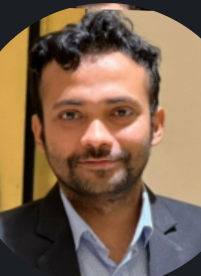

Ongoing
MS in Computer Science & Engineering
United International University (UIU), Dhaka, Bangladesh

Adjunct Faculty, CSE @ UIU · Team Lead, AI First Software Engineering
Computer science academic and industry leader with strong research credentials and over ten years bridging software engineering, quality assurance, and university teaching — translating real-world engineering and AI-assisted development practice into structured academic learning.
Computer science academic and industry leader with strong research credentials, active university teaching experience as Adjunct Faculty, and over ten years of professional engagement in software engineering and quality assurance. Demonstrates excellence in undergraduate instruction, laboratory supervision, assessment design, mentoring, and curriculum-aligned industry integration. Experienced in translating real-world engineering practices and AI-assisted development into structured academic learning.
MS in Computer Science & Engineering
United International University (UIU), Dhaka, Bangladesh
BSc in Computer Science & Engineering
United International University (UIU), Dhaka, Bangladesh
CGPA 3.96 / 4.00 — Summa Cum Laude, highest CGPA in the School of Science & Engineering. Merit Scholarship: 100% tuition fee waiver across multiple trimesters.
Adjunct Faculty
Department of Computer Science & Engineering, UIU
Teaching Assistant
Department of Computer Science & Engineering, UIU
Undergraduate Grader
School of Science & Engineering, UIU
Team Lead, AI First Software Engineering
Enosis Solutions, Dhaka, Bangladesh
— A Two-Tier Classification Model for Financial Fraud Detection.
Proposed a novel Linear Discriminant Analysis based two-tier fraud detection framework.
— Assistive Human–Machine Interface Using Tongue-Movement Ear Pressure Signals.
Developed an algorithm converting biomedical ear-pressure signals into human-readable commands.
Experiment with Evolutionary Algorithms
Proposed two enhanced evolutionary algorithms addressing limitations of existing methods.
Family Shikka
Non-profit educational initiative · Bangladesh
Family Shikka is a non-profit educational project built around a gap in the way the new generation is growing up: children today are increasingly unfamiliar with family manners — how to speak to parents and siblings, how to carry themselves inside a household, and above all how to treat elders with the respect that family life in our country has always assumed. The project is building an app that teaches these lessons through short videos, with each situation presented from more than one perspective — the child's, the parent's, the grandparent's — so that a viewer does not simply learn a rule, but understands why it matters to the person on the other side of it. The aim is to make everyday family values something a household can watch, discuss, and practise together.
Dr. Mahmut Ozcan
Assistant Professor, College of Technology and Engineering, Westcliff University
Senior Software Delivery Manager, Planet DDS
linkedin.com/in/mahmutozcanDr. Suman Ahmmed
Head and Associate Professor, Department of Computer Science & Engineering
United International University, Dhaka, Bangladesh
linkedin.com/in/dr-suman-ahmmed-24055a8